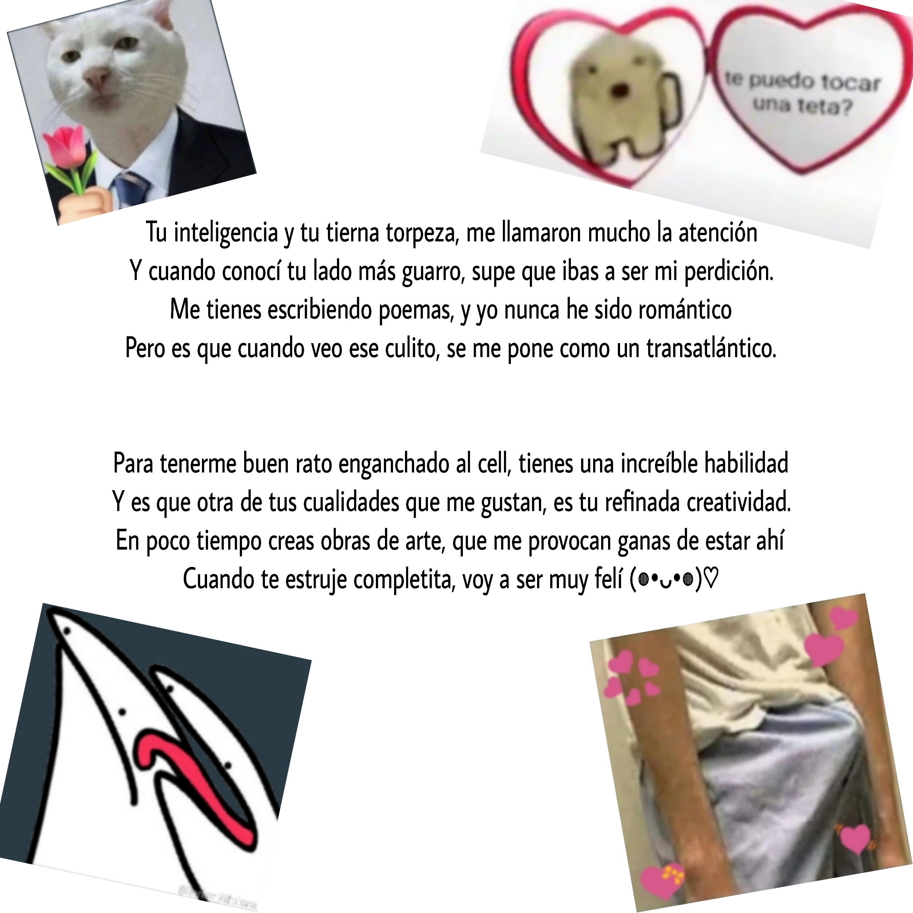
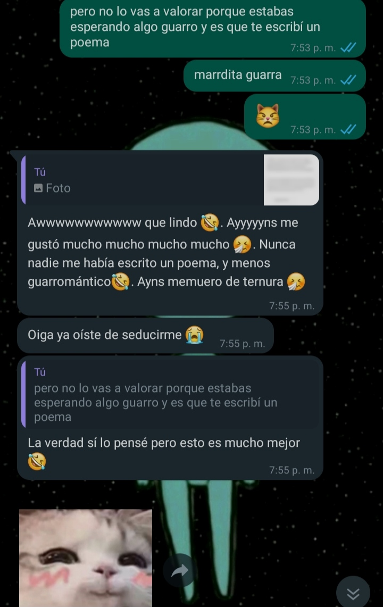
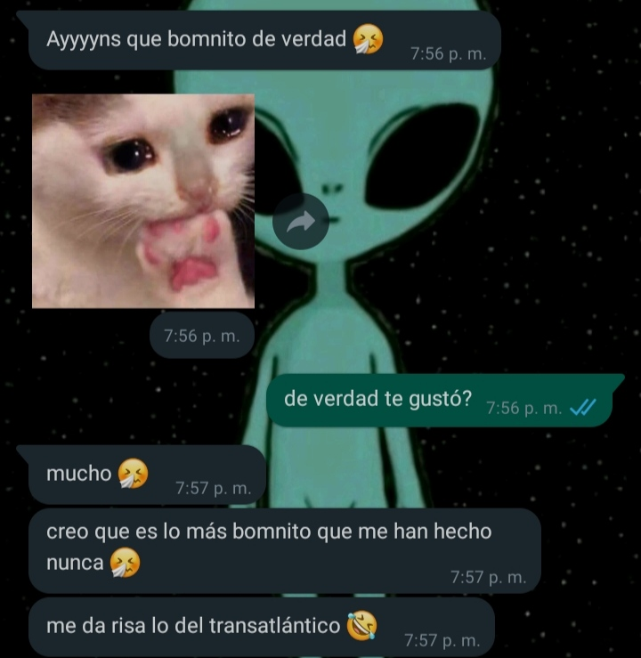

Hola preciosa, feliz cumple
Empezar
¿Recuerdas cuando te dije que amanecí sentado en la latop? Pues pasó
porque justamente a esa hora, luego de hablar contigo, fue que se me
ocurrió el diseño con el que te iba a hacer este pequeño detallito que
tenía en mente desde hace unos días.
Te dejo un índice con el nombre de cada capítulo, pero vas a empezar por
el 1ro, y antes de hacerlo, te pondrás cómoda, te colocarás los
audifonos y escucharás
esta rola
Si ya está lista, puede empezar, señorita (◍•ᴗ•◍)♡
Volver al inicio
Cynosura
Esto no se me da tan bien como a ella,
pero realmente me apetece hacerlo.
Quiero hacerle saber que es mi estrella,
porque sí, esa esquizofrénica tiene que saberlo.
Es 1ro de julio, son las 2 pm, y acabo de contarte sobre un análisis
super random y algo turbio que hice para darme cuenta de que me traes
bien enculado (las brujerías que me has hecho)

Y pues nada, me dieron ganas de escribir algo sobre ti. Planeo estar
estos días escribiendo aquí sobre cada pequeña experiencia o sensación
que me haga sentir el hombre más afortunado del mundo por haber
coincidido contigo. Básicamente cada vez que recuerde que te estoy
amando mucho, entraré aquí y escrib... no no, no puedo hacer eso,
escribiría tres libros khgjssj. Bueno, ya veré sobre la marcha como le
hago.
Mientras te escribo esto, sin ningún tipo de "metodología literaria",
solo porque me apetece, me doy cuenta de que tenerte en mi vida es lo
que propicia que no me esté sintiendo tonto en esta situación; el simple
hecho de saber que puedes estar sonriendo mientras lees este intento de
escrito romántico, hace que valga la pena hacer el tonto las veces que
sea necesario.
Y ojo al dato, lo de «estrella» en el pequeño poema del inicio, no fué
al azar. ¿Acaso pensó que estaba diciendo algo ahí bien genérico nomás
para empezar esto con un poema? Pues no, señorita, todo tiene un porqué:
Resulta ser que estos días, por una casualidad, me encontraba yo leyendo
un artículo (bastante digerible) sobre la
«Estrella Polaris». Que ya sabía de su existencia, pero
no estaba consciente de cuan impresionante es, nunca me había puesto a
pensar en ello. Bueno, esta estrella (que es gigante, 45 veces más
grande que el sol, y con una luminosidad 2440 veces mayor que la luz
solar), cuando se observa desde la tierra, aparte de verse como la
estrella más brillante de la constelacíon de la
Osa menor, al estar casi alineada con el eje de
rotación de la tierra (al norte), se crea un "efecto" como de que es la
única estrella fija en el cielo y todas las demás giran a su alrededor,
y justamente por eso es que históricamente ha sido la estrella por la
cual se guían los marineros para encontrar el norte cuando están
perdidos; es mucho más efectiva que cualquier brújula.
¿Sabes? No es una simple estrella, es LA ESTRELLA. Otro
dato, su nombre original es Cynosura, del griego, que
significa:
algo que te guía, algo en lo que se puede confiar.
Y pues... dándote todo este contexto, ya puedo llegar a donde quería: no
solamente eres mi estrella, eres mi Cynosura.
Volver al inicio
Alegría-Tristeza
Hoy desperté y lo primero que vi cuando abrí el WhatsApp, fue un mensaje
tuyo de casi las dos de la mañana, con un sticker lloroso porque te
acabaste el libro que estabas leyendo jhakakshdghja tan tierna miniña.

Casi todos los dias antes de dormir, estoy varios minutos imaginando lo
feliz que voy a estar cuando pueda dormir contigo todos los días, no
tengo forma de explicar como se siente esa... mezcla entre alegría y
tristeza. Alegría porque "laputamadre que feliz voy a ser cuando eso
pase" y tristeza por el "mecagoentó como falta aún para que ese sueño se
haga realidad". Justamente por dormir pensando en eso, sueles ser el
primer pensamiento que tengo al despertar.
Es diver que no tengas ni puta idea de que estoy haciendo esto xDDD.
Pase lo que pase, aguantaré las ganas de enseñarte hasta el día de tu
cumple.
Lo gracioso es que ni siquiera empecé a hacerlo por tu cumpleaños, solo
se me antojó de pronto; pero (con la idea en la cabeza de que tu cumple
está cerca) mientras lo hacía se me ocurrió que sería una buena idea.
Estoy casi seguro de que te hará feliz, y soy muy feliz cuando eres
feliz♡
Volver al inicio
Un poeta el conchesumare
En esta parte solo dejaré una recopilación de algunos de los intentos de
poema con los que te he conquista'o (adjuntar cara coqueta) para que
puedas acceder a ellos fácilmente cada vez que te apetezca, cada vez que
estés de bajón o necesites una respuesta a la pregunta de: "¿por qué yo
y no otra?" Y aquí voy con el primero de todos, el papá de los poemas,
una leyenda viviente, UNA MALDITA OBRA DE ARTE (desde la modestia lo
digo, claro está):
Trasatlántico

Tu reacción de ese día me llena de vida JHHGAGHFDSSG


Ahí le van otros:
Un «te amo»
Llegó el día, por fin la veo, por fin la voy a besar.
¡Laputamdre!, por fin la toco, por fin la voy a abrazar.
La distancia nos separa, esta situación es terrible;
pero lo que estamos sintiendo es real, es irreprimible.
Lo suponía, siempre supe que esto podía pasar;
y fue bastante rápido, aunque tarde o temprano iba a llegar.
Sé lo que piensa, aunque mejor voy a dejar que hable.
Sé que entre sus labios se esconde un «te amo» ingobernable.
Ella (sobre)pensando
Ella pensando que la estoy dejando de amar, y yo soñando con poder verla
de nuevo.
Ella pensando que la olvido, y yo fantaseando a cualquier hora del día
con volver a abrazarla.
Ella pensando que no es suficiente, y yo sintiéndome el hombre más
afortunado del mundo por haber coincidido con una persona tan especial.
Ella pensando que ya no siento lo mismo, y yo cada día más seguro de que
es la chica que quiero para mi.
Ella a veces sintiéndose fea, y yo a veces intentando contener las ganas
constantes de halagar su belleza para no parecer un psicópata.
Ella sobrepensando, y yo deseando que, cuando nos volvamos a ver, mi
forma de besarla y mirarla sean argumentos suficientes para demostrarle
que es lo mejor que me ha pasado en mucho tiempo.
Yo ahí metido en un canal profundo jkaksgdg. Aprovecho el momento para
dejar aqui un dibujo que te hice con mucho amor:

Siempre romantic, nunca inromantic xDD. Teamo veyesa.
Volver al inicio
Speak Now
Estoy casi seguro de que pensaste que había olvidado lo que me dijiste
súper emocionada sobre el álbum que Taylor iba a sacar, que es un álbum
de hace años pero ahora “Taylor's versión” o algo así. Pues no, fresca
mascapinga, no lo olvidé (sticker de capibara elegante 🧐🍷) Tengo
pensado escuchar cada canción del álbum de tu diosa para poder darte mi
opinión al respecto y decirte cual me recuerda a nosotros.
Actualización: Llevo todo el día evitando tocar el tema, y ahora acabas
de mandarme un audio diciéndome antiamor, que me has dejado indirectas
en las redes sociales y no te he dedicado nada de Speak Now. ¡Ayúdame a
salir vivo de esta papá dió! jajkdkjkskaj
(Ha sido duro aguantarme las ganas de decirte algo al respecto ese mismo
día, pero fué un sacrificio por un bien mayor)
Actualización2: ¡Que DESASTRE DIOJMIO! No había pillado lo que me
dijiste ese día que te hacía ilusión con la salida de ese álbum xD. Al
final no lo hice como lo esperabas (el menos despistado) y tuve que
improvisar, pero tu reacción me hace sospechar que te gustó

Que bien que hubo un buen desenlace jeje (suda frío). Te amo mucho,
chaparrita preciosa ♡
Volver al inicio
La primera vez
No, no es para hablar aquí de la 1ra vez que culiamos, pedazo de
cerda; en esta parte solamente quiero dejar registrada la 1ra vez que
nos dijimos «te amo», porque sí, fué un día muy importante y creo que
merecía un último capítulo dedicado solo a él.

Que lindo recuerdo diosmio, ese día sentí CADA palabra que dije.
Increíble que a esas alturas ya estuviera tan seguro de que estaba
enamorado de ti; y más increíble aún, saber que en el momento en el
que estoy escribiendo esto, mi amor por ti ha aumentado
exponencialmente.
Sé que te lo digo mucho, pero: eres lo más lindo que me ha pasado en
mucho tiempo.
Y ya, que no quiero alargar mucho esto. Ahora vendría la parte en la
que hacía unos chistes, pero ya conoces casi todo mi repertorio de
chistes malos, mejor lo dejo para torturarte cuando estemos juntos de
nuevo xDDD.
Te amo mucho, mi niña hermosa ♡
Ver la última sorpresa
Volver al inicio